Special Officers
© OUR TEMPLE @
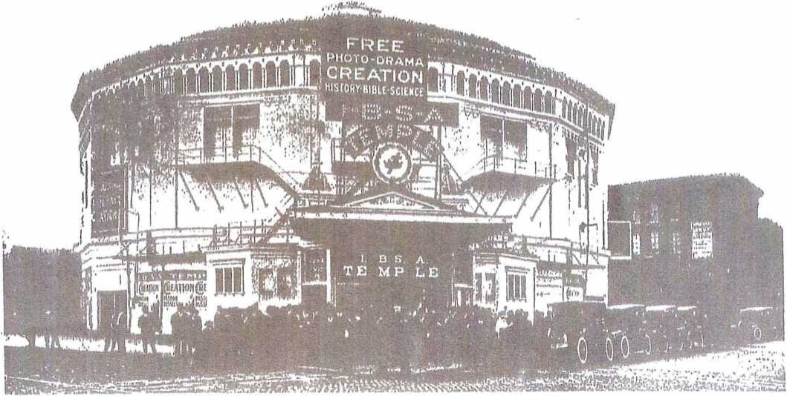In the Interest of His Consecrated Saints, Waiting for the Adoption
This Work is Dedicated
"To make all see what in the fellowship of the mystery which from the beginning of the world hath been hid in God.
"Wherein He hath abounded towards us in all wisdom and prudence, having made known unto us the mystery of His will, according to His good pleasure which He hath proposed in Himself; that in the dispensation of the fullness of the times He might gather together in one all things, under Christ."- Eph. 3: 4. 5, 9; 1; 8-10.
First General Convention of the Watch
Tower Bible and Tract
Society including views on 24 and 25
EVERY book, great or small, should have a preface. It is the reader's right to be told in advance for what purpose the book was prepared, and what he may expect to find on its pages, if he follows to the end. This Album has been prepared that a further record might be preserved, for the ages to come, of some of the events of this most momentous year, 1914, especially in connection with Chicago, its TEMPLE, and the work connected therewith.
Chicago occupies a unique position in the world, in many respects being the greatest city in the world; and, therefore, the influence of this Temple extends far and wide.
It seems especially fitting that a Souvenir of this Chicago Temple should be prepared, especially in view of the fact that the First General Convention of the Watch Tower Bible and Tract Society was held in Chicago, World’s Fair year, 1893, at 55th St. and Washington Park. A picture of that Convention is shown on page 2, which may be compared with pictures of more recent Conventions, as shown on pages 24 and 25.
A further purpose is to pay tribute to Pastor Russell and his labor of love, especially in connection with the “Photo-Drama of Creation,” the production of years of study and labor on his part, in an endeavor to glorify our heavenly Father and Jesus our Saviour, exalt the Bible, assist the Brethren and bless Mankind.
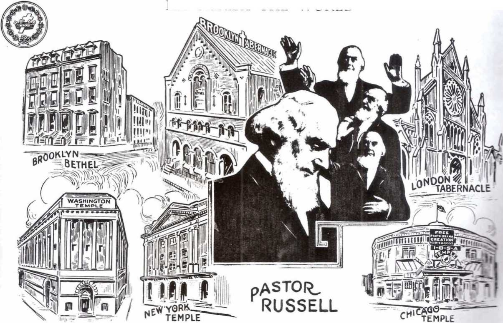THE Chicago Class of Bible Students, affiliated with the International Bible Students Association, has increased within a few years from a mere handful to about six hundred people, meeting during part of that time in any hall adapted to its size, but for the past few years in Recital Hall of the Auditorium Building.
In the spring of 1914 the increased number of members, as well as the varied lines of work, made it necessary to secure a larger place of meeting, preferably its own.
To find a hall answering ail the requirements was no small task.
After some perseverance upon our part the Auditorium in Chicago was available for a period of five weeks — April 5th to May 10th — and it was decided to take advantage of the opportunity for exhibiting the "Drama of Creation” at that time, leaving the selection of a suitable "Temple" until later.
A total number of 126,800 people witnessed this inspiring Photo Drama, and the impression created was so great that many people who failed to see it, clamored for its return.
Eventually it occurred to us that the "Old Globe Theater," originally built for the exhibition of the "Panorama of the Battle of Gettysburg" seemed an extremely desirable building for our double purpose. So strong was the desire to secure this building that Pastor Russell and others strenuously persevered and when the old lease expired the building was finally secured by the 1. B. S. A., and has since been known as the “1. B. S. A. Temple."
In order that Pastor Russell, president of the International Bible Students Association, could officiate at the dedicatory services, work was immediately started for thoroughly renovating and decorating the building inside and out. The purity of its clean, white coat of paint is symbolical of its name — "The Temple." Attractive wall signs and the large and beautiful electric sign of the "Cross and Crown” standing out like jewels in the night make the external attractiveness inviting for a long distance.
Entering the building, we find ourselves in a spacious “lobby," page 14, with white marble walls and Lobby large mirrors. The ceiling is done in stippled brown and old gold. In the center is a chandelier of about twenty lights, while around the border of the ceiling is a row of about eighty lights. The floor is mosaic, in which one of the brethren, skilled in that line of work, inserted the words, "I, B. S. A. Temple."
On either side of the lobby is an office, one the manager's office and the other the box office, used as such in the past, but now for the general use of the friends, for telephoning, etc.
Passing through the lobby, we come to the “foyer,” page 18. This is circular in form, extending about Foyer one-third around the building, and is well lighted with electric and gas lights, both being required by -the city fire department. At either end of the foyer are stairs, leading to the large balcony.
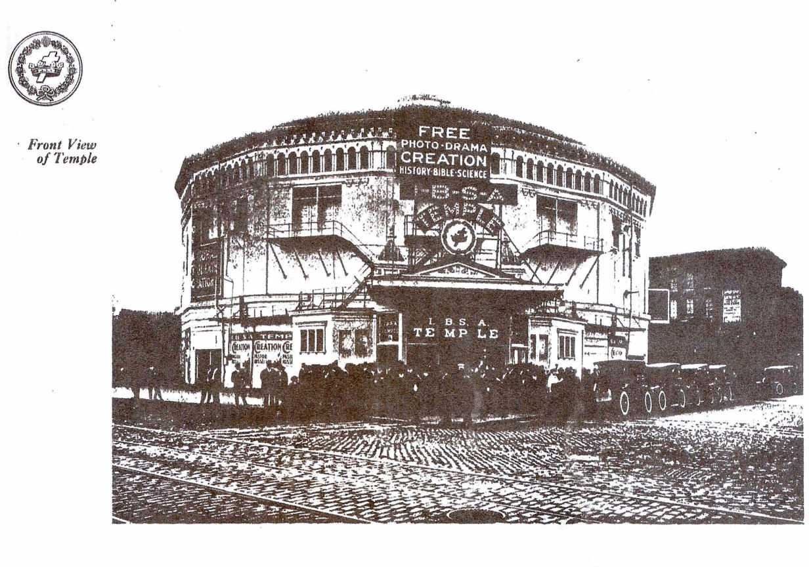Kutztown
HISTORY SOCIETY
IN free photo-drama
In the center of the foyer, at each side of the middle door to the auditorium, is a case containing Pastor Russell’s Scripture Studies, Scenarios, Bibles, etc. Hundreds of these books have been sold to the people as they come out after seeing the drama, their interest having been aroused and a desire created to look into their Bibles.
Auditorium
At the north end of the foyer is a doorway leading to the Men’s Rest Room, the Book Room and Literature Room. At the south end a doorway leading to the Ladies' Rest Room and the Reading Room.
Passing through the foyer we enter the spacious auditorium, page 19, seating fifteen hundred people. This room is beautifully laid out and on account of its circular nature, every seat is a good seat. The seats are of the opera chair style, most of them upholstered in old gold plush, the woodwoi k of all being dark cherry. Light green is the predominant color in the decorations, with a frieze in colors, and dark cream ceiling. The proscenium arch and circle of balcony is done in old gold bronze.
Mottoes and pictures double life size have been painted on the walls. A large picture on the north wall represents Jesus in the Garden of Gethsemane, while the one on the south wall represents Him as the "Good Shepherd." Over the stage is a beautiful painting of the open Bible.
It is lighted by a large central chandelier, four chandeliers under balcony, lights around balcony front, a double row of lights on each wall and top of proscenium arch.
The balcony, page 22, is reached on either side by one Hight of stairs, is large and spacious, with six hundred and fifty opera chairs, many upholstered; and every seat with a clear vision of the stage, not a post or pillar to interfere. The moving picture booth is near the top and center of balcony, page 47.
Balcony
Stage
Order of Exhibit
The stage, page 26, is unusually large for this size building, the opening for curtain being forty-four feet. It has been fully equipped with all kinds of appliances, electric switch-board, curtains, drops, etc.
One-half hour before Drama opens the public are admitted and full house lights turned on, the great steel curtain, operated by hydraulic power and weighing twenty-six hundred pounds being first raised. This reveals to the sight of those entering, the main drop curtain, painted in beautiful colors, red predominating, having in the center an Italian scene, and at the bottom the monogram, “I. B. S. A." Fifteen minutes later all house lights, except those of proscenium arch are turned off, the main drop curtain goes up, red footlights and red border lights above are turned on the stage setting, which in the subdued light of the auditorium gives a most beautiful effect to the stage setting.
This setting consists of a large curtain, forty-four feet long, with white picture screen in center, frame painted in black around screen and festoon painting of drapery around it all, which together with the sidewings and drapes above, all done in old rose and yellow makes an impression and gives an air of elegance not soon forgotten. Visitors of the past to the old Globe Theater can hardly believe they are in the same place.
View of Temple from Wabash Avenue
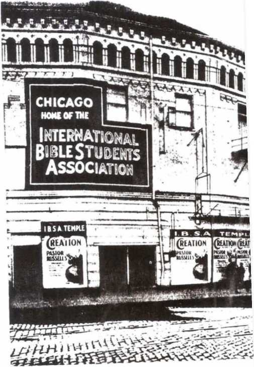As soon as the main drop curtain goes up and the red lights are turned on. the music begins, and continues for fifteen minutes. Then when the time arrives to begin the Drama, the rest of the house lights are turned off, the Cross and Crown slide is thrown on the screen, and just at that moment a thin red chiffon curtain parts in the center, each half moving slowly to the side of the screen, leaving the Cross and Crown standing out on a beautiful red background, in marked contrast to the deep black border around screen. The red screen is continued until all the "house slides" are shown, such as “Ladies Please Remove Hats," etc., and then, just as Pastor Russell comes on the screen to deliver his introductory remarks, the red lights are turned off. At no time is a while screen to be shown. At the close of the Drama the reverse order of lights etc. is observed. On the stage also is a piano and two large vases of flowers.
The Reading Room, page 34, is also used (or Elders and Deacons meetings every Eriday night, and for a Berean Bible Study every evening, except Sunday nights when it is held in the main auditorium, from 6.15 to 7.15. This is really the parlor of the Temple. Many books and old 'lowers have been loaned for use here. It will seat about ninety people, has a large table in center and is lighted by a long chandelier in center.
Back of the Reading Room, page 37, is the dining-room of the Temple Family, a band of about a dozen faithful workers who live at the Temple and who have chosen this way of laying down their lives in the service of the brethren. It is their duty to keep the place in order. ,
In the north side of the building is the Book Room, page 33, corresponding in size and location to the Reading Room, and this has been fitted with counters, shelves and cases for a large supply of books and literature, which proves a great convenience to both friends and the public.
Back of the Book Room is the Literature Room, where the folding of papers is carried on, and the matter prepared for both Temple and Volunteer use, page 35.
Above the Reading, Dining, Book and Literature Rooms are the sleeping quarters of the Temple Family.
Back of, in the center of and at the bottom of the curtain is the Phonograph Booth, page 46, the horns of the phonographs protruding through the curtain. In order that the operators may see the pictures, a mirror is placed on the stage and a peep-hole made through the curtain.
A complete system of house telephones has been installed, which connects with office, moving picture machine booth, phonograph booth, reading room, book room, and other places. Thus as necessity requires the different ones can be reached very quickly.
Since the terrible Iroquois Theater fire, several years ago, the City of Chicago has passed some very stringent laws for the protection of the public by means of fire prevention precautions. It has therefore been necessary to have both Firemen and Fire-guards. These have been selected from among the brethren; they
Reading Room
Dining Room
Book Room
Literature Room
Sleeping Rooms
Phonograph
Booth
House Telephones
Firemen, Fire-guards
View of Temple from 7th Street
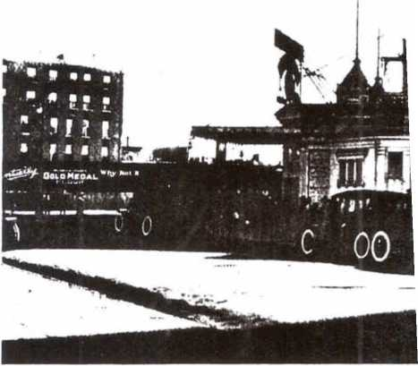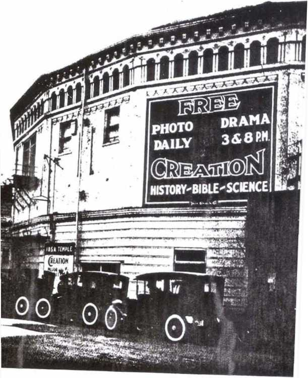have been thoroughly trained, and sworn in by the City for duty at the Temple. A group picture of these faithful brethren is shown on page 43.
Another faithful band of workers, whose services have done much to produce the excellent order which has been enjoyed aL the Temple, is the band of Special Police Officers, also duly sworn in by the City Police Department. In addition to the Special Officers, two of the brethren of the Chicago Bible Class are Regular Officers of the Mounted Police Squad, and their advice and help has been much appreciated. Their group picture is shown on page 42.
On page 38, another group of helpers is shown. These are among the many who helped to put the Temple into condition, and have acted in various capacities, some as doormen, special guards, ushers, etc.
It was the desire to provide to the greatest extent possible for the comfort and convenience of the guests at the Temple, and so a corps of Matrons was organized from among the sisters who volunteered to serve on certain days each week. Their neat appearance in nurses’ garb, and their sweet, kindly ways make a deep impression upon ail. Theirs is surely a picturesque group, as will be noted by referring to page 39.
We must not fail to make mention of another faithful band of workers, the ushers, some sixty in number, a group of some being shown on page 31. The work for them has been systematized according to the time they can give to the service and the necessity of the occasion, as more help is required on some days than on others.
The service opened with about twelve hundred friends present, who joined in the singing of several hymns. Then followed prayer and a beautiful rendition of the hymn, "Take the Name of Jesus with You," by Messrs. John T. Read, and B. M. Rice, both of whom formerly sang in the Imperial Quartet.
The dedicatory discourse was delivered by Pastor Russell. He called attention to the fact that the dedication of Solomon’s Temple has very generally given the suggestion of dedicating church edifices to the Lord and to His service.
The Pastor had no objection to this. Quite to the contrary, be held that the Christian who has given himself to the Lord, has really given or dedicated all that he possesses, and that to formally recognize this is merely to confirm his standing contract with the Lord. Not only every church, but every home and shop and store and barn should be dedicated to the Lord. Whoever realizes that he owns nothing of himself, but that he is merely God's steward grasps the Bible conception of real Christianity.
The dedication of the Temple at Jerusalem was an entirely different matter. Thal was a typical house, just as the nation of Israel was a typical nation. The sacredness of the glorified Church, which is the real Temple, was illustrated or typified by the honor and dignity and ceremonies which God attached to the typical temple. When God's time shall come, the antitypical temple will be honored and glorified much more than
Special Officers
Other Helpers
Matrons
Ushers
Dedication
was the typical one. That is to say, the Church in glory will have a very highly honored place as God's Tabernacle or Temple with mankind -- God's residence with humanity during the thousand years of Messiah’s Kingdom — the meeting-place where all the world will be permitted to draw nigh unto God and receive His blessing through Christ.
These matters were brought out in very lucid form in Pastor Russell’s dedicatory remarks, which the Bible Students listened to with rapt attention and evident appreciation of the many Scriptures cited in proof of the position taken.
Pastor Russell said that this dedication simply signified that for the period for which the Globe Temple has come under the control of the I. B. S. A., it is to be used For God, For righteousness, for truth, and these are understood to be combinedly represented in the Photo-Drama of Creation.
Surely, he said, as we see the sin veneer of civilization, all Christian people, ail good people, all wise people, all people who love righteousness, should seek more and more to cooperate in the promotion of these principles and truths amongst humanity.
After the meeting. Pastor Russell took train for the West over the Milwaukee & St. Paul Railroad, his first scheduled stop being Spokane.
Since the dedication the Photo-Drama of Creation has been shown twice daily, at 3 and 8 o'clock, the average attendance being nearly twelve hundred strangers per day.
In addition to the drama, other services have been held. During the week a Berean Bible Study is held each evening from 6.15 to 7.15 in the Reading Room. On Monday evening, the Tabernacle Shows is the topic; Tuesday, The Divine Plan of the Ages; Wednesday, Prayer and Testimony meeting; Thursday, Vol. Ill, "Thy Kingdom Come;” Friday, Vol. V, “The Atonement," and Saturday, Vol. VI, "The New Creation.”
Sundays, Service for Divine Worship, in the main auditorium at 10.30 to 12; Bible Study on International Sunday-School Lesson from 1.15 to 2.15; Photo-Drama from 3 to 5; Berean Bible Study on current lesson 6.15 to 7.15, and Photo-Drama again from 8 to 10 p. m.
The Sunday immediately following the dedication a Fifth Sunday Convention was held, at which eighty-two were immersed, and since then we have had three other immersion services, the last one being on Sunday, December 7th, a total of one hundred and seventy-one candidates being served.
Heretofore it has been necessary to make arrangements with some church for the use of their baptistry, but since moving into the Temple, we have provided a baptistry of our own. This is a large portable tank which is rolled out on the stage. A picture of the baptismal arrangement is shown on page 44. The numerous dressing rooms, previously used by the theatrical actors have served excellently for our needs.
Since Dedication
Weekday Temple Services
Sunday Services
Fifth Sunday
Convention
Baptism
Services
As a result of fourteen weeks, up to the Lime this Album went to print, many hearts and lives have been blessed because of the various services rendered at the Temple; not only those served have been blessed, but especially those who have done the serving; they feel it has been the greatest privilege of their lives, and they have endeavored to do all as unto the Lord, for His glory, and for the good of mankind.
Conclusion
The eyes of understanding of many have been opened to see something of the lengths and breadths and heights and depths of the love and plan of God for the blessing of all, in His due time.
Through seeing the pictures, prejudice has been broken down, and many have been caused to search anew their Bibles to see if these things be true. Opposition, instead of support, from the clergy has been met, but the people are gradually beginning to see for themselves and to use their own minds, instead of those of the ministers, most of whom deny the Bible, in fact and some in word.
Nevertheless we rejoice that the shackles of error and superstition are being gradually broken, and the light of truth is being shed into the hearts and lives of many.
In conclusion we feel that a word of tribute to our beloved Pastor, "whom we love for his works’ sake" is not out of order. The opposition to the Photo-Drama is aroused because he was the originator of this method of presenting the Gospel; it has cut us loo, because we realize such opposition is really against the Lord Himself.
We believe our Pastor to be the Servant of the Lord of his Laodicean period of the Church, and as such we desire to hold up his hands as Iresl we can, and reiterate here the words of Brother Sullivan, in his words of welcome at the Nashville Convention:
Tribute to Our Pastor
"Dear Brethren, I am sure I speak the sentiment of every heart in my presence when I say, today, to Brother Russell, that, in the name of the Master, a hearty welcome is extended to you you who have stood for forty years amid the raging blast, without ever a deflection; you who as a mighty oak rears its head in sublime grandeur today, being bereft of every green leaf, having had every leaf of earthly desire swept away. Who has also had every earthly love and ambition torn away, limb by limb, until there remains nothing of earthly fortune, or fame, or name; youth gone, health gone, home gone, deserted by some of the nearest and dearest earthly friends and relatives, mind and body worn, and almost consumed on the altar of our God, and in the service of the dear brethren; life, manhood, fortune, name, all spread at our feet as a carpet upon which we have freely trodden, all poured out as water at our feel, and today the slender thread of life is being taxed to its utmost to hold aloft the beacon torch. God bless you, we welcome you, and soon you will hear the welcome applause, ‘Well done, good and faithful servant, enter thou into the joys of thy Lord.’ But know also, dear heart, we will stand by you and strengthen your hands until the sun goes down." Amen.
Box Office
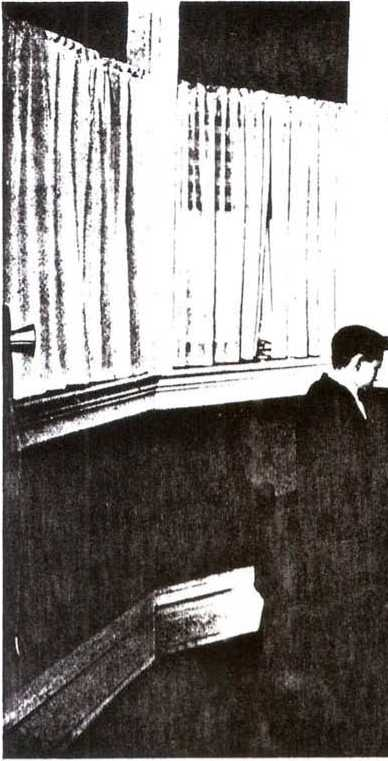Foyer
Convention at Los Angeles, California, 1913
^Compare with first convention page 2)
Convention at Springfield, Massachusetts, 1913 (Conipure with lint convent ion pagi* 2j
Pastor Russell Introducing Drama
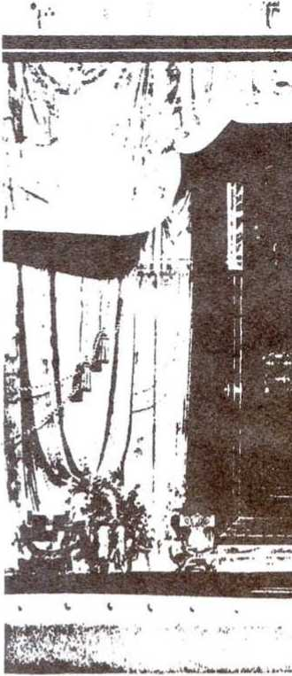Another View of the H arkers
> 34
Elders and Deacons, 1914
6/
Ladies' Rest Room
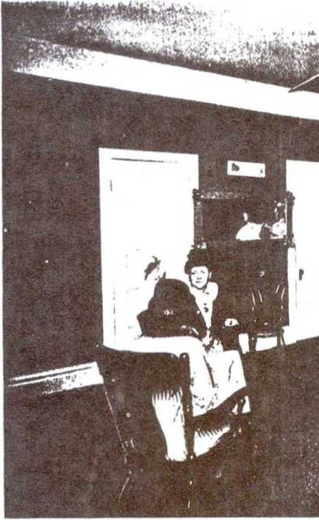Book Room
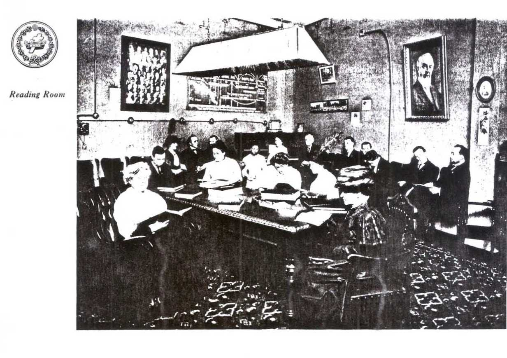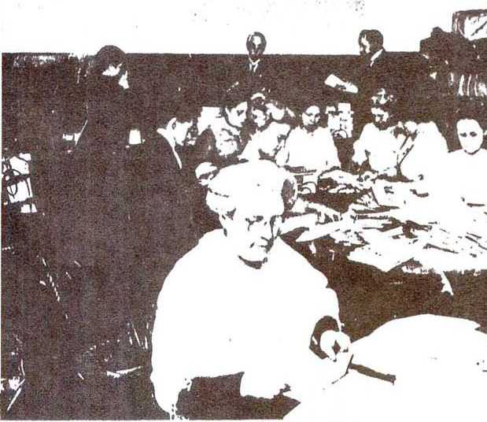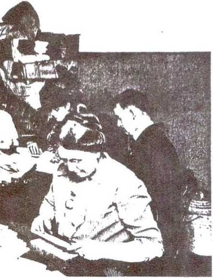Literature Room
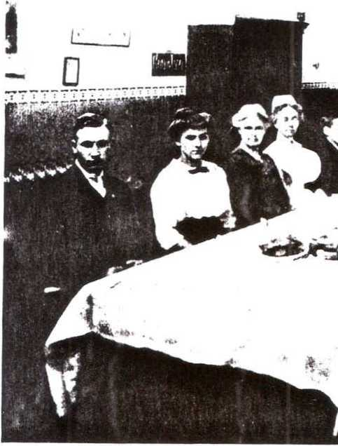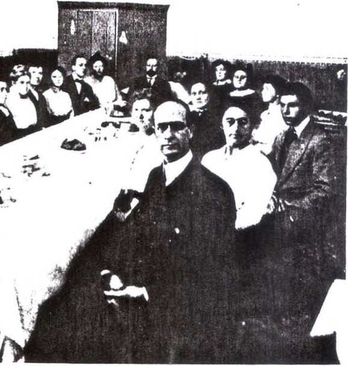
Temple Family at Dinner
Some
Special Workers
(Left to right) Standing
(•co. M. Graves John Ganz Roy Fries David Moyrr Allier I Franz Stanley Olson Jas Hochbaum (k-uigr Anderson Waller Manzke Frank Gunz Wm H Bell
Sitting Irving Goux Leo lluchbauni Irving C. Foss Vernon H Mills
Temple Family
(Left to right)
Standing W H. Martz Miss Carrie Upper Karl A. Lantau Vernon H Mills Irving C. Foss Mrs. Martha Kenyon Mrs. D. J. Murheiser D. J. Murheiser
Sitting Wm. O Westman Oskar Kahm Ben. H. Boyd John Anderson
Moving Picture and Phonograph Operators
(Left to right)
Back RowJens Copeland John Anderson
Front Row Miss Marie Peterson
Enid Hoskins Miss Adelaide Jones Mis. D. J Morheiser
Officers
(Left to right) Fr»M K<»t<«
bird C ICvitns Muitm Itolm L. W. Jones G. R. Salisbury George H. Hill
Second Row W () Chorley M 1. Greene
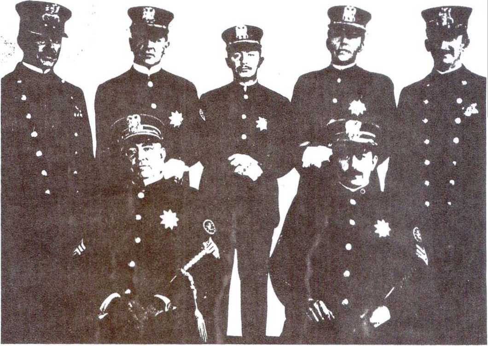Firemen and Fire-Guards
(Left to right) Win. O. Westman George Hill W II Maru Ben. 11. Boyd 11 E Baumann Stanley Olson I). J. Morheiser Wayne Garlick
Viorel.
Word is W’
I MKflilK
INDEX
USHERS
Mrs. Phoebe Krafft Miss Hazel Perry Mrs. George Keutzer Mrs. Martha Kenyon Mrs. George Hill
Miss Frances Fellows Mrs. E. Pettigrew Miss Laura Johnson Miss Inna Foss Mrs. Charles M. Anderson Miss Hazel Osburn Mrs. Walter L. Richards Mrs. W. O. Chngler Miss Eva Johnson Mrs. Earl Grested Miss Marie Peterson Miss Adelaide C. Jones Miss Nora Hindman Miss Gladys Mills Mrs. Eric Hansen Mrs. Florence Gustafson Miss Gladys Rechel Mrs. Nettie Rudd Mrs. Anna MacMillan Mrs. David Moyer Mrs. Waiter H. MacDonald Mrs. L. W. Jones Miss Helen Pearson Miss Elizabeth Erck Miss Maude Dirst
|
31 |
Miss Flora Hoskins |
ELDERS |
27 |
W. O. Chorley |
|
32 |
Mrs. E. Hunter |
0 Pastor Russell |
28 |
Jens Copeland |
|
33 |
Miss Gladys Mundahl |
I W. S. Bagley |
29 |
W. C. Dirst |
|
34 |
Miss Norma Rudd |
2 A. D. Flanner |
30 |
Carl Ekroth |
|
35 |
Miss Grace Snyder |
3 Carl Foss |
31 |
C. E. Fellows |
|
36 |
Miss Florence Snyder |
1 Marlin Foss |
32 |
Wiley Gardner |
|
37 |
Mrs. John Hoskins |
5 C. 11. Fox |
33 |
Samuel Goux |
|
38 |
Mrs. William 11. Bell |
6 L. Fries |
34 |
L. L. Grested |
|
39 |
Mrs. W. S. Bagley |
7 G. A. Hail |
35 |
R. C. Hill |
|
40 |
Mrs. Benj. F. Hollister |
8 Benj. Hollister |
36 |
M. A. Holm |
|
41 |
Miss Marie A. Peterson |
9 A. Holmgren |
37 |
S. S. Jacobs |
|
42 |
Mrs. John Dulin |
10 John Hoskins |
38 |
J. P. Johnson |
|
43 |
Miss Signe Johnson |
11 Henry Hoskins |
39 |
Wm. H. Martz |
|
14 |
Mrs. Richard McCoy |
12 C. Iverson |
40 |
T. O. McKay |
|
45 |
Miss Lena Uetz |
13 L. W. Jones, M. 1). |
41 |
Victor Mirku |
|
46 |
Mrs. S. D. Curtis |
11 A. C. Krueger |
42 |
Geo. Moe, M. D. |
|
47 |
Miss Hatlie Stiles |
15 W. J. Lindsey |
43 |
Stanley Olson |
|
48 |
Miss Alice Hall |
Ki W. 11. Mills |
44 |
F. S. Perry |
|
49 |
Miss Hulda Bell |
17 D. J. Morheiser |
45 |
M. Radovitch |
|
50 |
Mrs. Jennie Shaw |
18 Oscar A. Olson |
46 |
Ed. Rechel |
|
51 |
Mrs. Daniel Morheiser |
19 John T. Read |
17 |
Casper Reidhouscr |
|
52 |
Miss Minnie Fries |
21) W. T. Richards |
48 |
Oskar Rahm |
|
53 |
Mrs. G. M. Benjamin |
21 C. E. Schiller |
19 |
A. Rothman |
|
54 |
Mrs. Rosina Mueller |
22 A. L. Seeley |
50 |
C. N. Stem |
|
56 57 |
Mrs. Clara Shinn Mrs. Emma Smith Miss Olive J. Berkenes |
23 C. JI. Swingle |
51 53 |
W. L. Turkington W. J. Warncke H E. Whitcomb |
|
58 |
Miss Jessie Dirst |
DEACONS |
54 |
W. B. Wilkerson |
|
59 |
Mrs. G. W. Willing |
24 G. A. Alden |
55 |
G. W. Willing |
|
60 |
Mrs Harold Whitcomb |
25 John W. Anderson |
56 |
S. Thompson |
|
61 |
Mrs. Henry Hoskins |
26 M. C. Bradley |
57 |
Henry Bjornstad |